C&C Ceramic and Remodeling Job.
I contracted with Michael Cox at C & C Ceramic & Remodeling to do a mudroom project and do a little kitchen remodel work for me.
Here is what the garage entry looked like before.
Notice the ugly molding at the ceiling and the sloped drywall. Mike and I talked about building a new ceiling to create room for some insulation and create a new flat ceiling to work with. We also talked about fixing the headers above both doors and Mike said he'd "Make it look pretty."
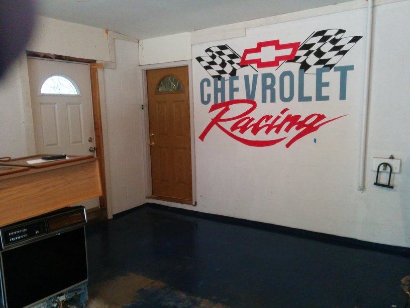
There were plenty of gaps in the insulation.
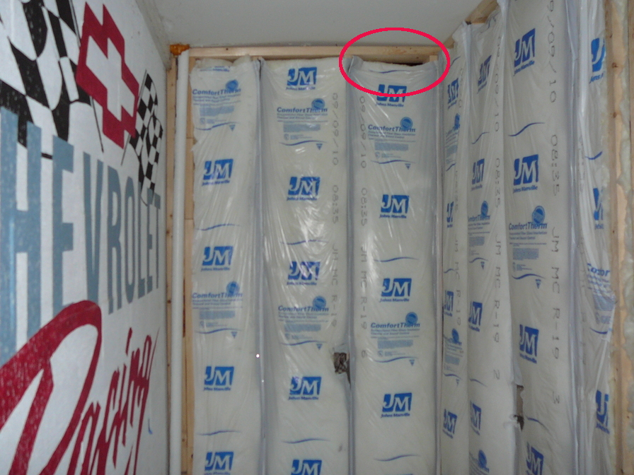
No insulation was put under the flooring. This framing and electrical part of the job went pretty quick.
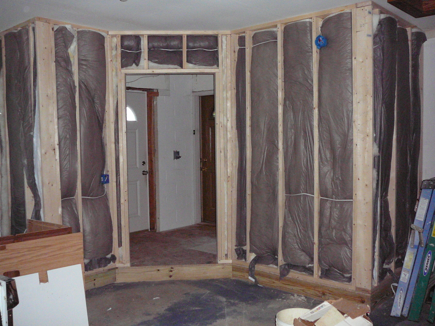
We went to about every tile store and home improvement store around and could not find any tile we liked. It seems that nuetral colors are very much in style. I wanted something different and we finally found these tiles! They are perfect for a mudroom, IMO, especially one with a Chevy logo painted on the wall. The plan was to use these as accent tiles and then just use inexpensive tiles for the rest of the floor. They are 15"x30" and are sold in 4 packs. Four of them will cover 1/5th of the whole floor! The only downside is that they were special order and would take 10 weeks to arrive. Since we could not find anything else we really liked it was decided to order the tiles and wait. This is when the troubles with the contractor escalated...
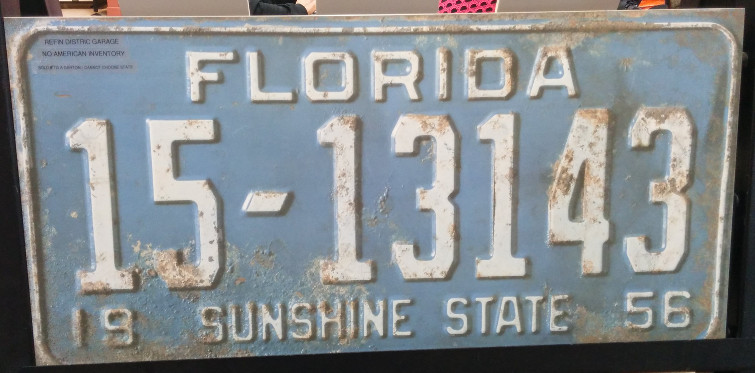
On 2015-07-08 Mike came over to install the door going into the mudroom. He told me he was going on vacation the next day and wanted paid ahead of schedule. I told him I wasn't comfortable with that, but I might pay him some early since the tiles were going to take so long to get here. I work at home and the 3 previous times he invoiced me, he did so while I was at work and expected to be paid on the spot before he would leave. There were always charges that were more than we agreed to and no good explanation as to why. I found this very unreasonable, but what are you to do when the contractor is already paid far more than the percentage of work done.
This time was no different. I told Mike I had to leave right away for a Dr. appointment and asked him to move his truck. Instead he got on his phone and emailed me an invoice and left his truck in the way. Without knowing that I had an invoice in my email I was attempting to leave by driving through the grass (I'm not paying a missed appointment fee and rescheduling). I heard his son say "He's getting away." Mike ran to my car and pounded on the trunk of my very nice car. He asked if I had gotten the invoice and I said no. He said he had just emailed it to me. That is funny, because the contract said there were no more payments to be made until the tile was in.
I was so upset that I told him I wasn't going to pay him ahead of schedule and help him out with his vacation. When he got home he threatened me for an hour and a half on the phone. He threatened to sue me and add on all kinds of fraudulent charges.
Mike installed this nice looking exhaust vent. Below is the right and left side of it. There is plenty of space for bugs and mice to crawl right into the kitchen!
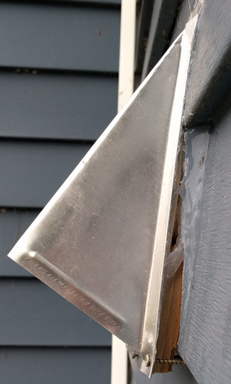 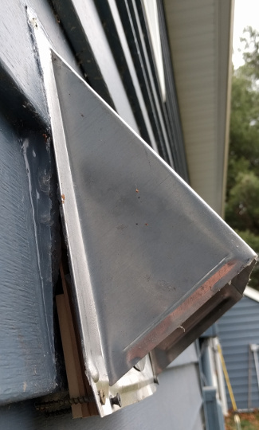
After leaving the job site for almost 6 months he came back and spent maybe a half a day to finish some things.
Not only wasn't the ceiling not lowered, insulated and re-drywalled, but this was the "finished" ceiling.
Mike told me he wasn't going to come back to do it because it wasn't in the contract.
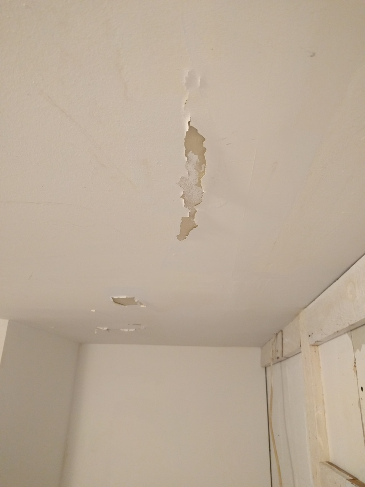
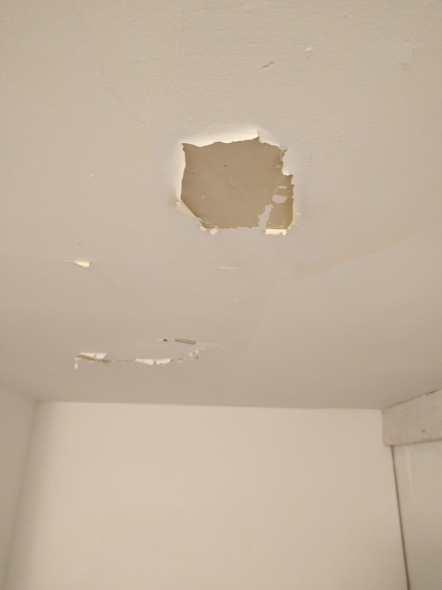
This is the finished header above the outside door. Yes, this was considered "Complete" by Mike. All I can think of is his agreement to make it look pretty.
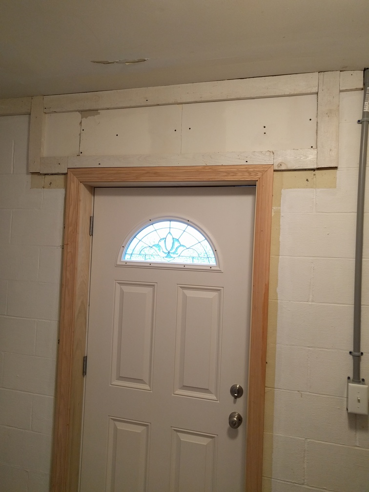
This is the "Finished" plumbing vent.
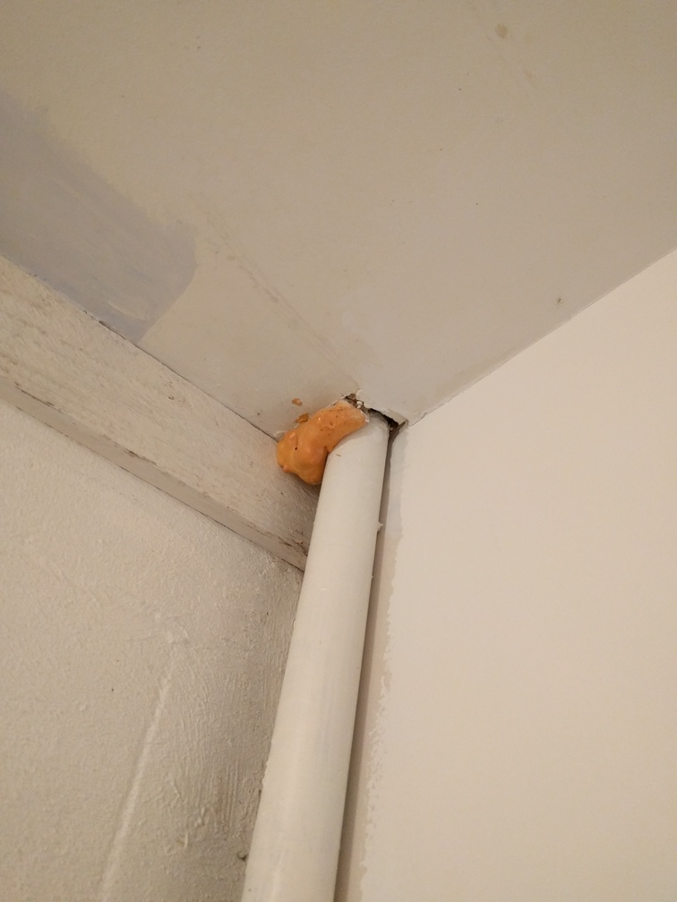
I saved a few whole tiles from when I tiled the kitchen years ago for when I got a new dishwasher. I gave them to the tile setter and while I was at work he put some scraps in instead. I have no idea why. They do not go back far enough to cover the concrete, are spaced too far apart and are unlevel with the other tiles. It is just a mess. This is "Finished"
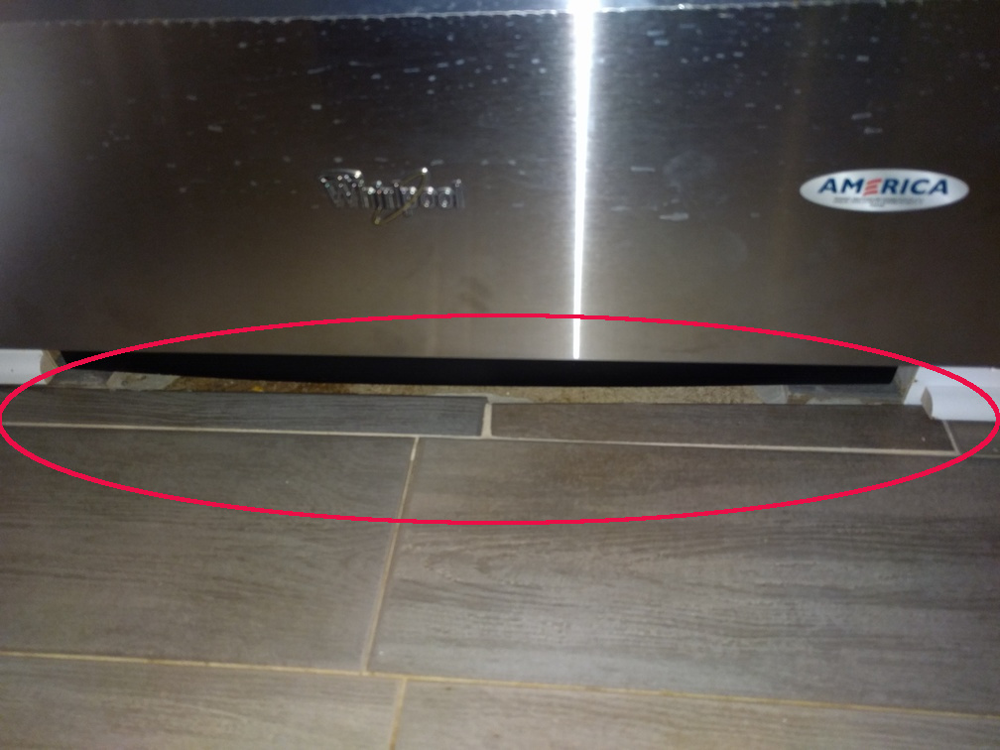
This is the wall behind the refrigerator. The wall wasn't finished by C&C, so the cabinet guy just installed the cabinet on top of this mess. 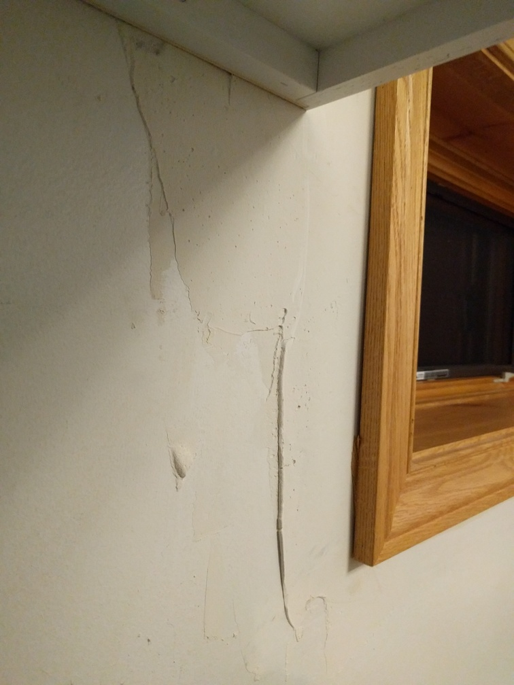